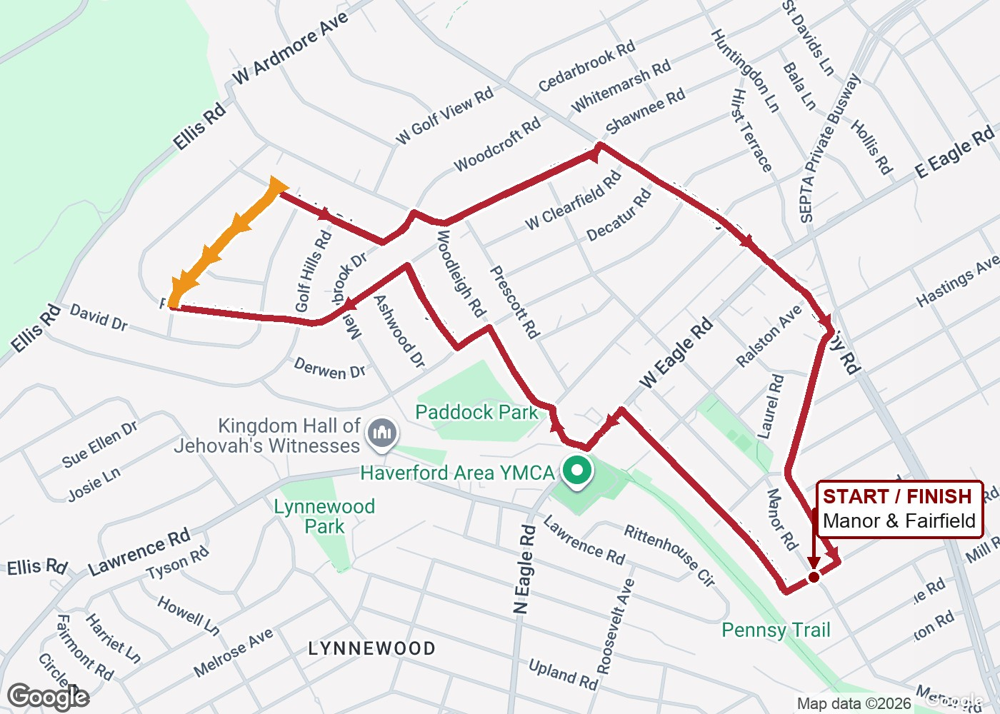
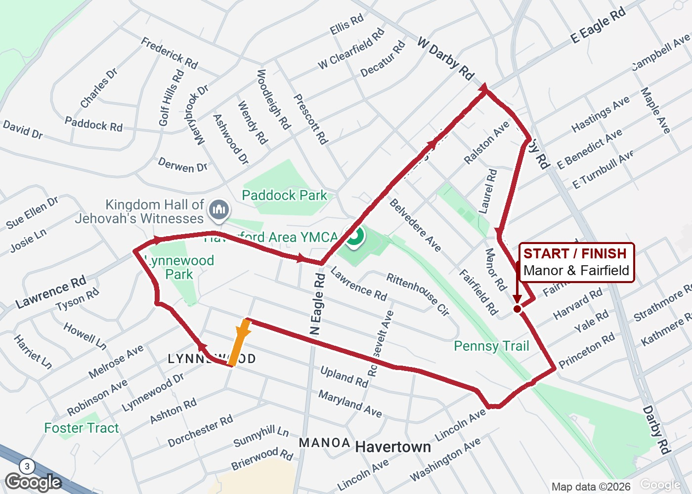
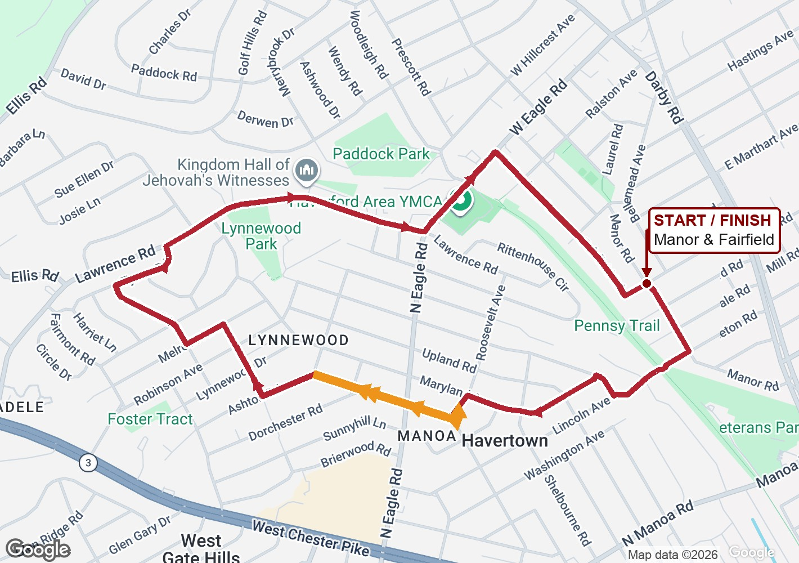
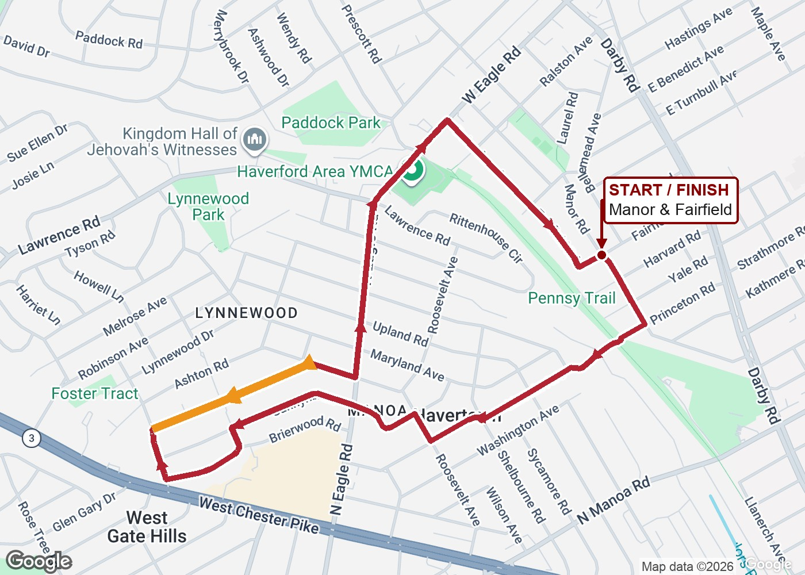
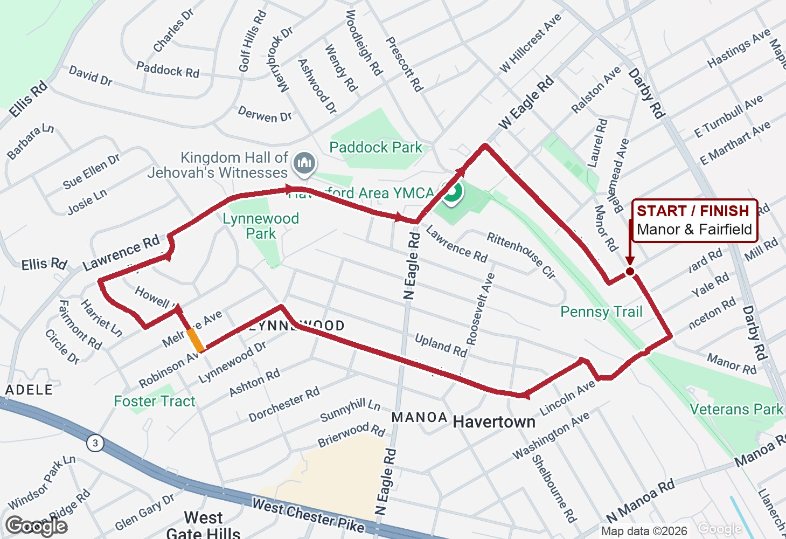
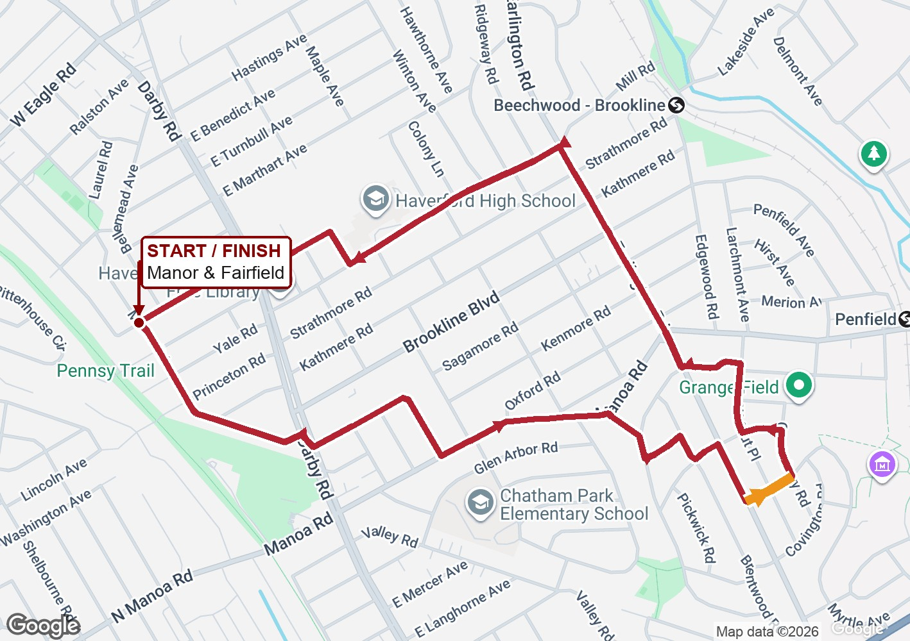
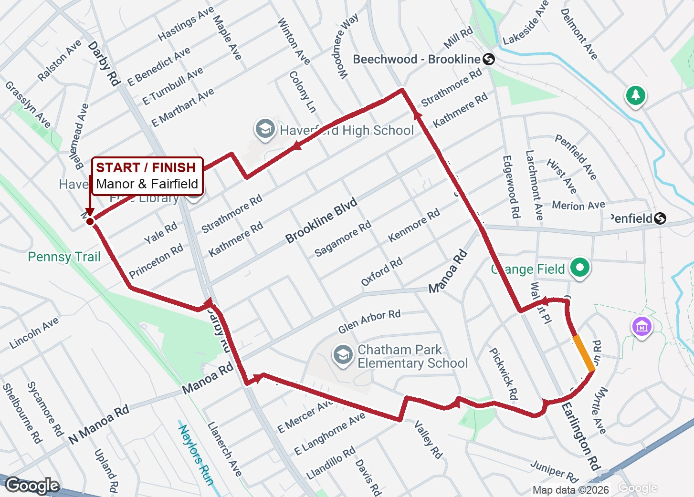

1. Charles Drive circle 3.17 mi
Orange: Charles Drive · Frederick to Paddock · Red: the complete loop

CityStrides shows no purple track on this section; the adjacent Frederick and Paddock roads are covered.
Estimated from mapped streets · No repeated segments · GPX · GeoJSON
2. Holmes Avenue circle 3.02 mi
Orange: Holmes · Virginia to Maryland · Red: the complete loop

The middle Holmes section appears uncovered; the north end near Harrington has a purple track. Uses the existing Princeton–Lincoln connector.
Estimated from mapped streets · No repeated segments · GPX · GeoJSON
3. Annabella circle 2.96 mi
Orange: Annabella · Roosevelt to Holmes · Red: the complete loop

Annabella appears uncovered between Roosevelt and Holmes. Uses the existing Princeton–Lincoln connector.
Estimated from mapped streets · No repeated segments · GPX · GeoJSON
4. Dorchester circle 2.87 mi
Orange: Dorchester · Annabella to Stanton · Red: the complete loop

The diagonal Dorchester section appears uncovered. Uses the existing Princeton–Lincoln connector.
Estimated from mapped streets · No repeated segments · GPX · GeoJSON
5. Howell middle-section circle 3.03 mi
Orange: Howell · Melrose to Robinson · Red: the complete loop

This middle section appears uncovered. The existing October 2 loop used other Howell sections. Uses the existing Princeton–Lincoln connector.
Estimated from mapped streets · No repeated segments · GPX · GeoJSON
6. St Albans circle 3.26 mi
Orange: St Albans · Earlington to Canterbury · Red: the complete loop

No purple track is visible on this St Albans section.
Estimated from mapped streets · No repeated segments · GPX · GeoJSON
7. Canterbury circle 3.34 mi
Orange: Canterbury · St Albans to Covington · Red: the complete loop

No purple track is visible on this Canterbury section. Uses the mapped Twin Oaks–Covington pedestrian connector.
Estimated from mapped streets · No repeated segments · GPX · GeoJSON